Operating Documentation
Direction 5224328-800, Rev# 5
Dir 5224328-800 LightSpeed 5.X HP60 Limited Access Service
Methods - Adv.
Operating Documentation |
| Required Persons | Preliminary Reqs | Procedure | Finalization |
|---|---|---|---|
| 1 | Timing Not Applicable | Timing Not Applicable |
This procedure explains how to remove and re-install the CT Gantry front cover.
| Last Revised: | 7 March 2007 |
| Follow ALL required safety and PPE procedures customary for your organization, when working on this product. | |
| Potential for front and rear cover damage. Front and rear cover removal and installation can be safely accomplished by (1) person using the dollies provided with the system. Failure to use these dollies will significantly increase the likelihood of damage to the covers. Do not lean covers against walls. | |
| NOTE: | Before beginning this procedure, please read the safety information in Equipment Service - Gantry. |
| Condition | Reference | Eff |
|---|---|---|
Only trained service personnel should service the GE CT Scanner. | - | - |
| EQUIPMENT TIP HAZARD | |
| DO NOT USE DOLLIES ON UNEVEN SURFACES SUCH AS STEPS OR ELEVATOR THRESHOLDS. THE DOLLIES ARE DESIGNED TO BE USED ON FLAT LEVEL FLOORS WITHIN THE SCANNING SUITE ONLY. MISUSE CAN RESULT IN PERSONAL INJURY OR DAMAGE TO COVERS OR OTHER FACILITY ITEMS. | |
| ONLY USE DOLLIES ON FLAT SURFACES. |
| Rotating arms on the stand are supposed to be stiff. If they fall freely, tighten the tensioning nuts. Loose rotating arms will reduce the stability of the dollies when supporting the front cover. Do not lubricate. | |
Arrange Dolly sections for assembly. The base and post can be assembled only one way. Refer to Illustration 1 and Illustration 2.
The base uses two (2) palm screws to clamp the four (4) legs in the open or usage mode.
The base also uses the same palm screws to prevent the legs from falling in storage mode.
The top post can be inserted in either base and is keyed for proper engagement.
The top post locking pin prevents the sections from separating during usage.
Illustration 1: Redesigned Front Cover Dolly in Storage Mode
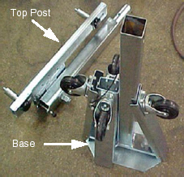
Illustration 2: Redesigned Front Cover Dolly Base Assembly
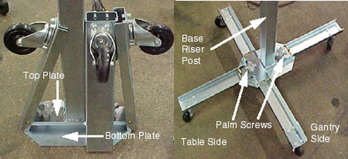
Unfold the base legs by loosening both palm screws to the top of their travel.
Carefully unfold the legs so that the castors touch the floor.
Tighten the palm screws to clamp the legs between the base top and bottom plates.
| NOTE: | Lifting the base by the riser post while leaving the castors on the floor will ease palm screw tightening. |
| EQUIPMENT TIP HAZARD | |
| COVER DOLLIES MAY TIP OVER IF NOT CONFIGURED PROPERLY. | |
| ENSURE BOTH PALM SCREWS ARE TIGHTENED SECURELY AND THE LEGS ARE CLAMPED TIGHTLY BETWEEN THE BASE TOP AND BOTTOM PLATES. FAILURE TO DO SO WILL RESULT IN INSTABILITY DURING FRONT COVER HANDLING. |
Insert top post into the base riser post. Align the key for complete engagement.
Insert top post locking pin to secure both top and bottom sections.
Reverse above steps to disassemble.
| NOTE: | For base storage only one (1) palm screw needs to be tightened. This will engage the bottom base plate and the leg ends preventing the legs from unfolding during transport and storage. |
Position the table at its lowest position.
| Always turn OFF the HVDC before the 120 VAC. Turning OFF 120 VAC power before HVDC power can result in equipment damage. | |
Remove gantry side and top covers, if you have not already done so.
Verify the three (3) power switches have been turned OFF (see Illustration 3) .
Illustration 3: Service Switch Panel

Assemble the front cover dolly.
Tighten the two (2) shoulder bolts to the gantry securely. This will make cover installation easier. See Illustration 4.
Illustration 4: Front Side Dolly
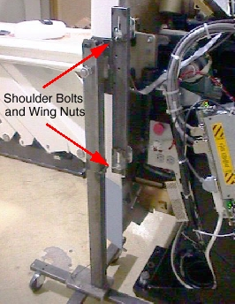
Attach side dolly to the shoulder bolts and secure assembly with two (2) wing nuts.
Detach front cover J3 and J2 and front cover BKHD J1 cables.
Remove the Mylar (scan) window.
Remove front cover.
Disengage upper and lower cantrell brackets on both sides of the cover.
Using steady but firm pressure, lift each of the lower cantrell brackets from their associated retainers. See Illustration 5.
Illustration 5: Releasing Cover Brackets

Disengage the locking mechanism on the upper cantrell brackets by using your thumb to slide the trigger (red lever) back. This will release the locking mechanism and allow the cantrell to be rotated upwards with steady and firm pressure.
Disengage the rubber retaining straps on both sides. See Illustration 6. You may find it helpful to lift “up” on the cover to align the stud while attaching the rubber retaining straps.
Illustration 6: Rubber Retaining Straps and Cover Locking Mechanism

Lift and rotate cover locking arm to unlocked position.
Rotate front cover away from gantry.
Move front cover away from gantry, leaving space (about 5 feet) between cover and gantry.
Pull the locking pin and rotate front cover away from gantry. Place locking pin in one of the side dolly perforations. See Illustration 7.
Illustration 7: Releasing Front Cover Dolly Hinge

Continue cover removal per Illustration 8.
Illustration 8: Front Cover Removal Sequence
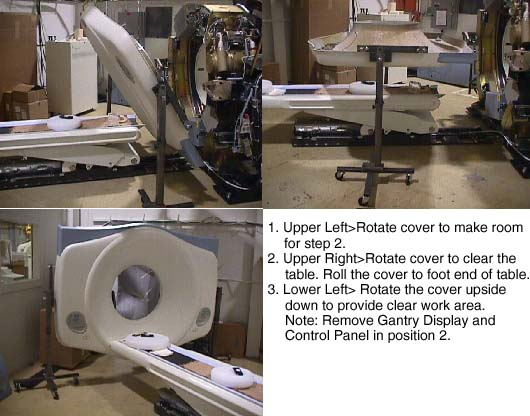
Rotate the cover horizontally and move it back and over the table to a safe location. Once in a safe location, you may over-rotate the cover full vertically but upside down.
Remove the gantry display from the front cover and place it into its service position.
The gantry display is held in place with (5) thumb screws. Use a flat-blade screwdriver to remove the Display. See Illustration 9.
Illustration 9: Gantry Display Removal
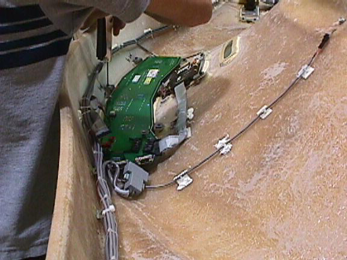
Place the Display in the bracket on the right side of the gantry. See Illustration 10.
Illustration 10: Gantry Display Service Mounting Location
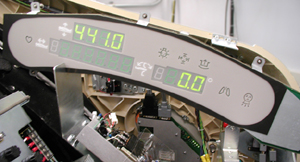
Disconnect the cabling at the right rear gantry cover. Only (1) cable will connect to the Gantry Display. Connect the cable taken from the rear cover to the display.
Remove one (1) of the cover’s control assemblies, and place it into its service position.
Press on each ball stud until the panel is released. See Illustration 11. Keep one hand on the control panel at all times to prevent it from dropping to the floor.
Illustration 11: Gantry Control Panel Removal
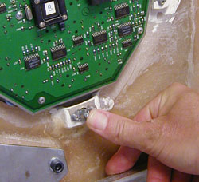
Align the ball studs with their associated receivers and snap into place.
Illustration 12: Control Panel Service Position
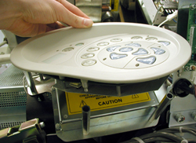
Connect cable to terminator located on the cantrell arm. See Illustration 13.
| NOTE: | There are 3 cables, each of which is unique. The ribbon cable is not used in the Service configuration. The other 2 cables will only fit in the terminator or the control panel, not both. |
Illustration 13: Gantry Service Mode Cable Terminator
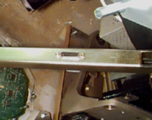
Remove the gantry display and control assembly from their service positions and reattach them to the gantry cover.
Disconnect cables from Display and Gantry Control Panels.
Install Gantry Display in front cover. Secure the 5 thumbscrews. With a flat-blade screwdriver, gently tighten past finger-tight.
Install the gantry control panel, making sure the ball studs are secure within the receivers.
Reattach cables.
| Potential for front cover damage. When you rotate the gantry back to its vertical position, make sure not to scratch the front cover with the edge of the table cradle. | |
Rotate gantry back to its vertical position.
Attach the front cover.
Align the studs on both sides of the front cover with each associated receiver. Receiver is located on the gantry frame.
Illustration 14: Cover Stud and Mounting Bracket Receiver
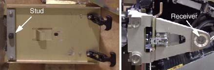
Insert the stud on one side into its associated receiver and attach the rubber retaining straps.Then insert the stud on the other side into its associated receiver and attach its rubber retaining straps.
You may find it helpful to lift "up" on the cover to align the stud while attaching the rubber retaining straps.
Reattach upper and lower cantrell brackets on both sides.
Remove upper Cantrell brackets from service position and rotate them into position over their associated retaining pins. See Illustration 15 and Illustration 16.
Illustration 15: Service Position of Upper and Lower Cantrell Brackets.
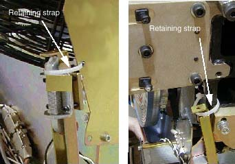
Illustration 16: Cover Retaining Pins (Top and Bottom)

Press down firmly on the bracket and snap it into place. The locking mechanism on each upper bracket should lock the bracket securely into place. Do this on both sides. See Illustration 17.
Illustration 17: Locking the cover brackets into place.
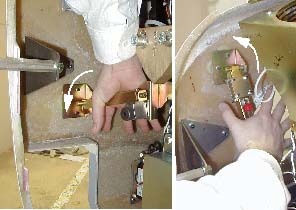
Remove lower cantrell brackets from service position ( Illustration 15), and rotate them into position over their associated retaining pins. Press down firmly on the bracket and snap it into place. See Illustration 17.
Remove dolly, disassemble and store safely away for later use.
Reattach cables to cover.
Re-install the Mylar (scan) window.
No finalization required.